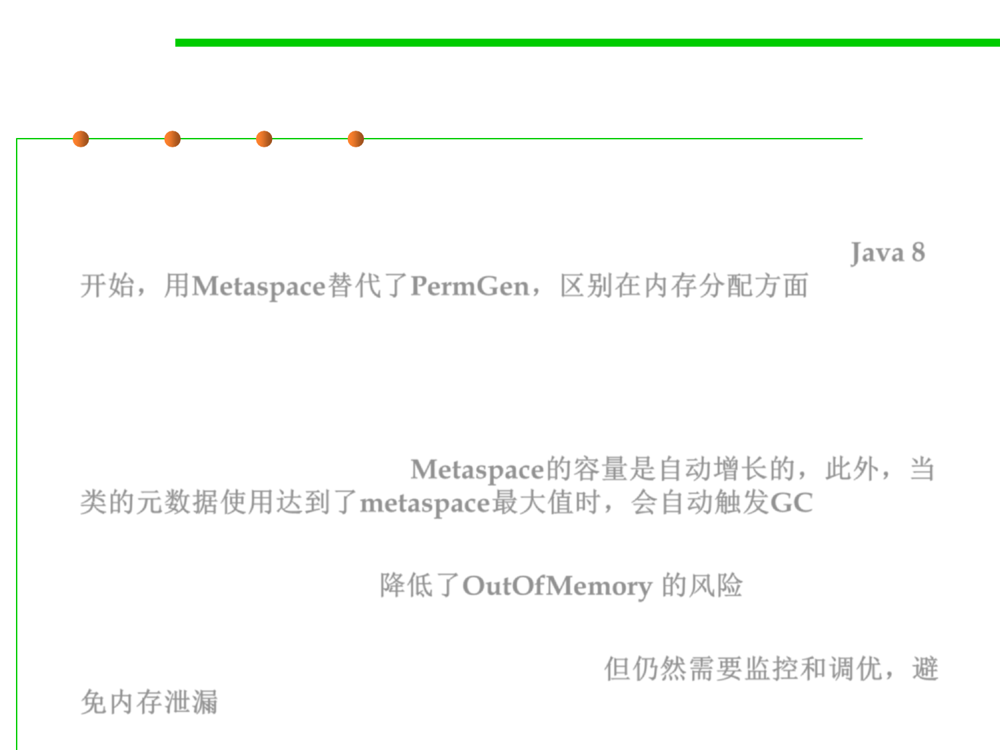

8.1 Metrics, Principles, and Methods of Construction for Performance
The PermGen and Meatspace
▪ Simply put, Metaspace is a new memory space – starting from the Java
8 version; it has replaced the older PermGen memory space. The most
significant difference is how it handles the memory allocation. Java 8
开始，用Metaspace替代了PermGen，区别在内存分配方面
▪ As a result, this native memory region grows automatically by default.
Additionally, the garbage collection process also gains some benefits
from this change. The garbage collector now automatically triggers
cleaning of the dead classes once the class metadata usage reaches its
maximum metaspace size. Metaspace的容量是自动增长的，此外，当
类的元数据使用达到了metaspace最大值时，会自动触发GC
▪ Therefore, with this improvement, JVM reduces the chance to get
the OutOfMemory error. 降低了OutOfMemory 的风险
▪ Despite all of this improvements, we still need to monitor and tune
up the metaspace to avoid memory leaks. 但仍然需要监控和调优，避
免内存泄漏